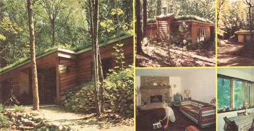
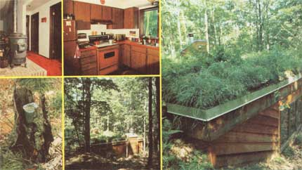

Daniel Rinker wanted to build a special home for his daughter, a house that would be easy to maintain, inexpensive to heat and cool, and compatible with the landscape. That's why he decided to...
The Rinker house is certainly beautiful on the outside and really does seem to belong in its lovely wooded setting . . . no matter which angle you pick to view the dwelling from. And inside . . . the home is just as comfortable (probably more so) and "modern" looking as any conventional aboveground house. Note the clever way in which the Rinkers have disguised some of the building's vents as "stumps".
You've heard tales about eccentric old gentlemen who bury their money in the back yard. Well, I went one step further . . . I buried my daughter, Joyce, along with it! The story isn't at all gruesome, however, because the "back yard" - in this case - is 4-1/2 acres of forested sand hills in Michigan . . . and Joyce is happily "dug in" there in a modern three-bedroom, earth-sheltered home with an attached two-car garage.
Joyce decided she wanted an underground dwelling about four years ago, after she read about one that had been constructed in Massachusetts. But, of course, we didn't jump right in and build the house immediately.
However - during the next few years, as my wife and I enjoyed our retirement - we traveled around the country to investigate all of the earth-sheltered structures we could find. We visited the library at Hendrix College in Conway, Arkansas, an underground elementary school in New Mexico, and a goodly number of other partially or completely subterranean homes and institutions. And we talked to homeowners, realtors (to see how these buildings affected area property values), janitors and principals in the belowground schools . . . in short, just about anyone who could answer our many questions.
Once we'd gathered all the data we could find, we enlisted the services of Tom Halberg, a local architect. Tom agreed to check the relevant building codes, design the house (with some "back-seat drafting" from me), and build it.
Halberg first suggested that we use an all-weather, pressure-treated wood construction rather than concrete or cement blocks. So, I researched further and found that an Indiana firm had built more than 60 homes with all-weather, wood basements. When I found that the cellars stayed dry despite that wet Indiana clay around them, I was convinced.
We decided upon southern pine - pressure treated at 50 to 60 pounds per square inch - because it's water-repellent, resists fungus and rot, and doesn't appeal to termites or other insects . . . and I worked out the stress loads and angles myself with the help of a machinist's handbook. Most folks could run these calculations themselves, but my 38 years as a tool-and-die maker made the figurin' especially easy for me.
Just to be on the safe side, we added a layer of 6-mil black polyethylene waterproofing - between the wood and sand - to all of the building's earth-facing surfaces. The plastic sheet should have a life span of at least 50 years in this particular application.
All the dwelling's walls were built from 3/4" treated plywood and nailed - with hot zinc-dipped fasteners - to 2" X 6" pressure-treated studs. These supports are placed 12" on center to assure the strength of the structure. Then, to make these surfaces even more sturdy, we reinforced all of the earth-covered walls with diagonally braced sheets of 3/8" plywood before the sand was piled on.
The roof was constructed from treated pine plywood, too . . . nailed to 2" X 12" ceiling joists which were placed 12" on center the same way the studs were spaced in the walls. This wood was then covered with five layers of felt - which we applied with mopped-on hot plastic roofing cement - to reinforce and waterproof the "top" of Joyce's home. Then, over the fabric/glue mixture, we added two layers of the polyethylene and two inches of styrofoam, with a four-inch plastic drainpipe (which carries the roof water off and deposits it in the surrounding soil) sandwiched in between. We covered this "layer cake" roof with an average of eight inches of sand, black loam, and forest sod . . . just enough to support local vegetation and a patch of blueberries and huckleberries.
That earth, of course, is our primary insulation. In addition to it, however, we had 12 inches of cellulose blown into the ceiling and packed six inches of fiberglass into the walls. We also installed a number of Andersen tripleglazed Windowalls . . . which let the sun in without letting out too much heat in the process. I knew we'd insulated well enough when the snow on the roof melted at the same rate as the drifts in the surrounding countryside.
In order to comply with a local township building code - and because Joyce wanted windows in every room - we left 22% of the house's outer surface exposed. These "naked" walls were dressed up with redwood siding.
Joyce heats her "contemporary cavern" with a single Ashley wood stove ... and - for backup - has electric baseboard heat to keep her guinea pig and parakeet warm when she's away. The wood burner is centrally located on an eight-inch-high brick platform, and its vent and exhaust pipes sneak out on to the roof . . . where they're disguised in hollow tree stumps.
The house and garage cost us about $44,000 (under $24 per square foot) which is less than the price of a comparable aboveground home in this area. We didn't have any trouble at all obtaining financing, but I have talked with folks who've had problems getting loans . . . usually because they didn't have thorough, well-researched plans to show the officers of their local banks or savings and loan institutions. If you're going to do something "different" you must be able to convince the moneylenders that you know your stuff.
Now, after her first year "underground". Joyce knows the house's capabilities pretty well. She burned 3-2/3 full cords of "cut for free" wood through last year's bitterly cold winter, and only used the auxiliary electric heat when she went away for two weeks in December. Furthermore - with the thermostat set at 70 degrees, and the air outside a chilly 10 above - only 39 kilowatts a day were required to maintain the home's inside temperature. That works out to a heat loss of about 5,400 Btu's per hour for 1,220 square feet of floor space. Before the cold hit, Joyce wondered if the wood stove - with no mechanical means of circulating its heat - would be able to keep the whole house warm. Once winter came along, however, she was pleasantly surprised to find that the interior temperature never varied more than four degrees Fahrenheit from one end of the building to the other. Better than that, though, Joyce discovered that even if she didn't light a fire - when the mercury was huddled like a wad of chewing gum somewhere below zero - the temperature in her earth-sheltered home wouldn't drop more than a single degree every two to three hours.
Even the garage (which is insulated only by the soil around it) stayed high enough above freezing all winter to melt any snow that came in on the car.
Summer brought even more good news: Though the air outside sweltered at around 95 degrees, the house maintained a comfortable inside temperature of 68 to 72 degrees all season!
A lot of folks ask Joyce if the building is damp. And she can honestly tell them she's had no moisture problems at all. The pressure tank for the water pump has never even built up enough condensation to drip. I can't think of any better proof of low humidity than that.
People also wonder whether burrowing and chewing animals might cause damage to our treated walls. Well, last fall Joyce watched a porcupine amble up to some of the treated wood in search of salt. He took a few nibbles, figured that there was a bellyache in that wood for sure, and sauntered away. We don't worry about animals at all any more . . . if a porky can't eat something, it plain can't be et!
Most everyone already knows that you can't beat underground houses for ease of maintenance and inexpensive temperature control, but I suspect that these structures are more healthful to live in than normal buildings, too. In fact, some doctors in New Mexico told me that they send children with respiratory problems to the earth-sheltered elementary school in that state because they think being in the building will help clear up the ailments . . . and my sinus problems always seem to improve when I spend a day or two in Joyce's home.
But the best feature of this house - from my animal loving daughter's point of view, anyway - is the "front-row seat" it gives her in the daily local wildlife show. The home blends in with the landscape (enough to be almost "invisible" from the back) and - since ground level is just below the windows - Joyce often can look out and see a squirrel or raccoon peerin' back in at her.
We may, in the future, add some solar equipment to Joyce's dwelling . . . if we can find a system that will work with the peekaboo sun that characterizes this area. But I'm pretty proud, and my daughter is very happy, with what we've done already. We figure that this below-ground home is head and shoulders above anything else we've seen.
|
 |
 |
|